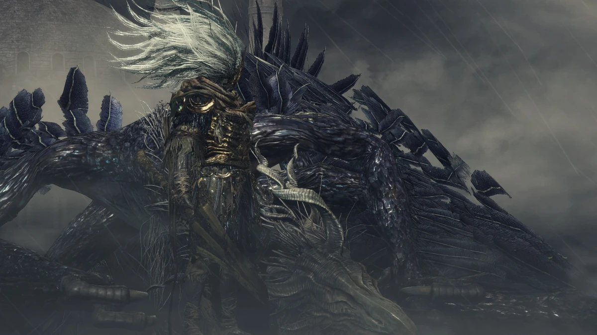

← Volver
← Volver
Rey sin Nombre y Rey de la Tormenta son un jefe opcional de Dark Souls III. El Rey sin Nombre es un imponente humanoide cubierto de armadura que vuela sobre su wyvern azul, Rey de la Tormenta y ataca jugadores con su lanza. Durante la primera fase de esta batalla de jefe, se lo nombra como Rey de la Tormenta, refiriéndose a su formidable montura. En esta fase, el wyvern juega un papel significativo en la batalla, utilizando sus propios y poderosos ataques para desafiar al jugador
Una vez que el wyvern es derrotado, la pelea hace su transición hacia la segunda fase, y el nombre del jefe cambia a Rey sin Nombre. En esta fase, el Rey Sin Nombre desmonta, absorbe el cadáver de su montura con su lanza y se enlaza en combate con el jugador directamente, haciendo una demsotración de su propio poder y de su destreza en combate. Esta transición marca un cambio dramático en la dinámica de la batalla, haciendo que el jugador deba adaptarse a una nueva estrategia para sobrellevar los ataques mejorados y el comportamiento agresivo del Rey sin Nombre.
"El Rey sin Nombre fue alguna vez un Dios de la Guerra, asesino de dragones, antes de que sacrificara todo para aliarse con los dragones antiguos."
Los jugadores pueden encontrar la batalla contra el Rey sin Nombre bastante difícil, sin embargo, familiarizarse con su kit de habilidades lo hace más fácil. Este jefe es opcional y no hay invocaciones de NPC de ayuda para esta batalla de jefe. Hay dos cosas a tener en cuenta antes de invocar a este jefe. Si invocás a Hawkwood, él usará un Cristal de Separación Negro una vez que la campana suene, desabilitando a las invaciones. Hawkwood puede ser asesinado antes de este encuentro, permitiendo así que las invocaciones sean posibles. Adicionalmente, tañir la campana para invocar al Rey de la Tormenta cubrirá al Pico del Archidragón en una tormenta masiva, que desaparecerá una vez que el jefe sea derrotado. la Piedra Centelleante de Torso de Dragón y asimismo su compañera, la Piedra Centelleante de Cabeza de Dragón todavía puede conseguirse usando un emoticón en la coma de la colina durante y después de la tormenta.
El Rey de la Tormenta / Rey sin Nombre se encuentra disponible como un jefe opcional en el Pico del Archidragón, después de tañir la campana grande que se encuentra cerca del Gran Campanario.
| Playthrough | NG | NG+ | NG++ | NG+3 | NG+4 | NG+5 | NG+6 | NG+7 |
|---|---|---|---|---|---|---|---|---|
| Solo Souls | 80000 | 160000 | 176000 | 180000 | 192000 | 196000 | 200000 | 204000 |
Esta es la cantidad de Almas que obtendremos tras vencer al RsN en los diferentes playthrough, desde el New Game regular hasta NG+7.
| Playthrough | NG | NG+ | NG++ | NG+3 | NG+4 | NG+5 | NG+6 | NG+7 |
|---|---|---|---|---|---|---|---|---|
| Vida Total del Rey de la Tormenta | 4,577 | 4,582 | 5,040 | 5,269 | 5,498 | 5,956 | 6,186 | 6,415 |
| Vida Total del Rey sin Nombre | 7,100 | 7,108 | 7,818 | 8,174 | 8,529 | 9,240 | 9,595 | 9,951 |

 ↑
↑